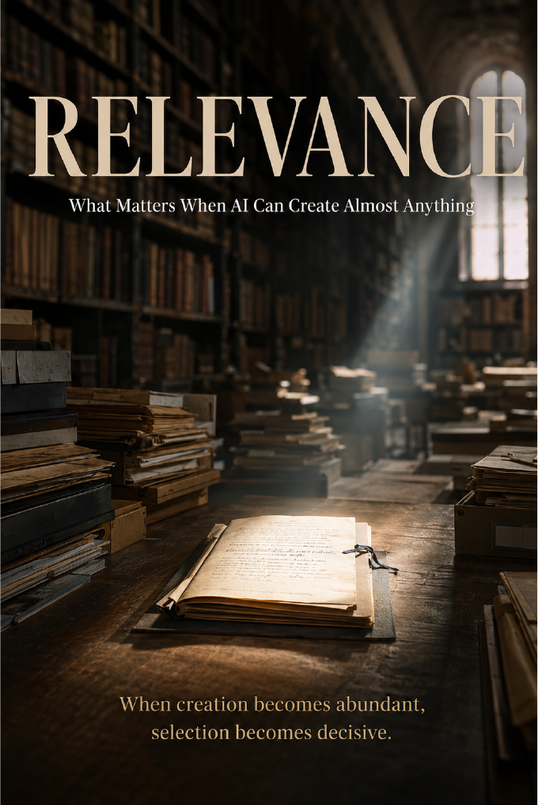

Executable Science & Research · Axiologic Research Editions
Relevance
What Matters When AI Can Create Almost Anything
Explore why relevance is a relationship rather than a universal score, and how research, culture, design, and institutions can choose responsibly amid abundance.
When creation stops being scarce
AI can supply a laboratory with more hypotheses, a publisher with more drafts, or a studio with more concepts than any team can responsibly assess. The old production bottleneck was unfair and exclusionary, but it also filtered volume. As it weakens, society must make selection intentional.
Relevance is not a substance stored inside an artifact or a universal score. It is a relationship between a work, a purpose, a context, and a moment in time.
Judgment is the scarce resource
Research, literature, film, design, and art need different forms of assessment, but each needs ways to distinguish novelty from noise, usefulness from mere fluency, and cultural significance from algorithmic attention. Metrics can help, but once they become targets they can displace the effects they claim to measure.
When creation becomes abundant, selection becomes decisive.
Relevance infrastructure
The book explores institutions that could document purpose, assumptions, provenance, alternatives, feedback, consequences, and revision. Its goal is not a machine that declares what matters, but practices that make human judgment more careful, plural, inspectable, and capable of learning.